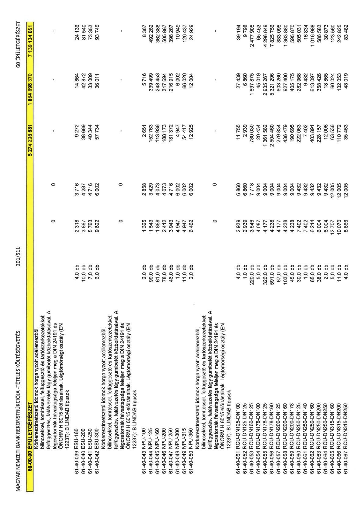

| Tétel | Menny. | Egys. | Anyag e.ár (net HUF) | Díj e.ár (net HUF) | Anyag összesen (net HUF) | Díj összesen (net HUF) | Anyag+Díj összesen (net HUF) |
|---|---|---|---|---|---|---|---|
| 61-40-039 ESU-160 | 4,0 | db | 2 318 | 3 716 | 9 272 | 14 864 | 24 136 |
| 61-40-040 ESU-200 | 10,0 | db | 3 867 | 4 287 | 38 669 | 42 872 | 81 540 |
| 61-40-041 ESU-250 | 7,0 | db | 5 763 | 4 716 | 40 344 | 33 009 | 73 353 |
| 61-40-042 ESU-300 | 6,0 | db | 9 622 | 6 002 | 57 734 | 36 011 | 93 745 |
| Körkeresztmetszetű idomok horganyzott acéllemezből, bilincsekkel, tömítéssel, felfüggesztő és tartószerkezetekkel, felfüggesztés, falátvezetés lágy gumibetét közbeiktatásával. A légcsatornák falvastagsága feleljen meg a DIN 24191 és ÖNORM H 6015 előírásainak. Légtömörségi osztály (EN 12237): B LINDBAB típusok | 0 | 0 | 0 | 0 | 0 | 0 | 0 |
| 61-40-043 NPU-100 | 2,0 | db | 1 325 | 2 858 | 2 651 | 5 716 | 8 367 |
| 61-40-044 NPU-125 | 99,0 | db | 1 543 | 3 429 | 152 763 | 339 499 | 492 262 |
| 61-40-045 NPU-160 | 61,0 | db | 1 868 | 4 073 | 113 936 | 248 453 | 362 388 |
| 61-40-046 NPU-200 | 78,0 | db | 2 412 | 4 073 | 188 173 | 317 694 | 505 867 |
| 61-40-047 NPU-250 | 46,0 | db | 3 943 | 4 716 | 181 372 | 216 915 | 398 287 |
| 61-40-048 NPU-300 | 1,0 | db | 4 947 | 6 002 | 4 947 | 6 002 | 10 949 |
| 61-40-049 NPU-315 | 11,0 | db | 4 947 | 6 002 | 54 417 | 66 020 | 120 437 |
| 61-40-050 NPU-350 | 2,0 | db | 6 462 | 6 002 | 12 925 | 12 004 | 24 929 |
| Körkeresztmetszetű idomok horganyzott acéllemezből, bilincsekkel, tömítéssel, felfüggesztő és tartószerkezetekkel, felfüggesztés, falátvezetés lágy gumibetét közbeiktatásával. A légcsatornák falvastagsága feleljen meg a DIN 24191 és ÖNORM H 6015 előírásainak. Légtömörségi osztály (EN 12237): B LINDBAB típusok | 0 | 0 | 0 | 0 | 0 | 0 | 0 |
| 61-40-051 RCU-DN125-DN100 | 4,0 | db | 2 939 | 6 860 | 11 755 | 27 439 | 39 194 |
| 61-40-052 RCU-DN125-DN125 | 1,0 | db | 2 939 | 6 860 | 2 939 | 6 860 | 9 798 |
| 61-40-053 RCU-DN160-DN125 | 220,0 | db | 3 546 | 7 718 | 780 030 | 1 697 875 | 2 477 905 |
| 61-40-054 RCU-DN178-DN100 | 5,0 | db | 4 087 | 9 004 | 20 434 | 45 019 | 65 453 |
| 61-40-055 RCU-DN178-DN125 | 326,0 | db | 4 177 | 9 004 | 1 361 582 | 2 935 267 | 4 296 849 |
| 61-40-056 RCU-DN178-DN160 | 591,0 | db | 4 238 | 9 004 | 2 504 460 | 5 321 296 | 7 825 756 |
| 61-40-057 RCU-DN200-DN125 | 67,0 | db | 4 177 | 9 004 | 279 834 | 603 260 | 883 095 |
| 61-40-058 RCU-DN200-DN160 | 103,0 | db | 4 238 | 9 004 | 436 479 | 927 400 | 1 363 880 |
| 61-40-059 RCU-DN200-DN178 | 45,0 | db | 4 238 | 9 004 | 190 695 | 405 175 | 595 870 |
| 61-40-060 RCU-DN250-DN125 | 30,0 | db | 7 402 | 9 432 | 222 063 | 282 968 | 505 031 |
| 61-40-061 RCU-DN250-DN140 | 1,0 | db | 7 402 | 9 432 | 7 402 | 9 432 | 16 834 |
| 61-40-062 RCU-DN250-DN160 | 65,0 | db | 6 214 | 9 432 | 403 891 | 613 097 | 1 016 988 |
| 61-40-063 RCU-DN250-DN200 | 38,0 | db | 6 004 | 9 432 | 228 157 | 358 426 | 586 583 |
| 61-40-064 RCU-DN250-DN250 | 2,0 | db | 6 004 | 9 432 | 12 008 | 18 865 | 30 873 |
| 61-40-065 RCU-DN315-DN160 | 5,0 | db | 12 707 | 12 005 | 63 536 | 60 024 | 123 560 |
| 61-40-066 RCU-DN315-DN200 | 11,0 | db | 10 070 | 12 005 | 110 772 | 132 053 | 242 825 |
| 61-40-067 RCU-DN315-DN250 | 4,0 | db | 8 866 | 12 005 | 35 463 | 48 019 | 83 482 |
